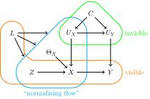

Creating and using graphs in causalprog
In causalprog, directed acyclic graphs (DAGs) are used to represent causal problems. This documentation page describes how these graphs can be created and used, and is aimed at users of the library. Documentation for library developers can be found in the documentation for developers.
Creating a graph
A new (empty) graph can be created by directly calling the Graph class.
There is one required keyword argument: a label that is used to identify the
graph. This label can be any string.
from causalprog.graph import Graph
graph = Graph(label="I like graphs")
Nodes and edges can then be added to the graph using the method add_node and
add_edge. In this example, two data nodes that represent scalars are added
with a directed edge pointing from the first node to the second node.
from causalprog.graph import DataNode
node1 = DataNode(label="first_node")
node2 = DataNode(label="second_node")
graph.add_node(node1)
graph.add_node(node2)
graph.add_edge(node1, node2)
The method add_edge can take either node labels or the nodes themselves as
inputs, so the above snippet could be rewritten more concisely as follows.
from causalprog.graph import DataNode
graph.add_node(DataNode(label="first_node_again"))
graph.add_node(DataNode(label="second_node_again"))
graph.add_edge("first_node_again", "second_node_again")
If node objects are passed into add_edge, then add_edge will internally
call add_node on its inputs if they are not already nodes in the graph.
Hence, the above snippets could be written even more succinctly (but maybe
less clearly) as follows.
from causalprog.graph import DataNode
graph.add_edge(
DataNode(label="another_first_node"),
DataNode(label="another_second_node"),
)
When a node explicitly depends on other nodes, then edges will be automatically added to the graph when the node is added. For example, in the following snippet a data node representing a scalar and a continuous random variable node are added to the graph.
from causalprog.graph import DataNode, ContinuousRandomVariableNode
graph.add_node(DataNode(label="A"))
graph.add_node(ContinuousRandomVariableNode(label="X", parents=["A"]))
As "first_node" is a parent of the random variable node, the edge pointing
from "first_node" to "X" will automatically be added the graph in the
final line of this snippet.
Nodes
This section of the documentation details the different types of graph node available in causalprog.
ConstantNode
A ContantNode is a node that represents a known constant value. These
nodes have two required keyword arguments that must be passed: a label for
the node and the value that the node represents:
import jax.numpy as jnp
from causalprog.graph import ConstantNode
one = ConstantNode(label="one", value=1.0)
vector = ConstantNode(label="v", value=jnp.array([1.0, 1.0, 2.0]))
DataNode
A DataNode is a node that represents a constant value that is not known
when the node is created. These nodes have one required keyword argument
that must be passed: a label for the node. They can take the shape of
the data that the node represents as an additional keyword argument, with
the default shape being () for a scalar value.
import jax.numpy as jnp
from causalprog.graph import DataNode
scalar = DataNode(label="my_scalar")
vector = DataNode(label="my_vector", shape=(5, ))
matrix = DataNode(label="my_matrix", shape=(4, 2))
Random variable nodes
Random variable nodes represent random variables (RVs) in a causal problem.
There are two types of random variable node in causalprog:
ContinuousRandomVariableNode and DiscreteRandomVariableNode. Both of
these must be passed the a label for the node as a required keyword
argument, and can take a number of additional keyword arguments: the shape
of the data that the RV outputs, a function to compute the value of the RV
from the values of its parents, and a list of parents of the RV node.
Discrete RV nodes must be passed an additional required keyword argument: a
list of possible values that the RV can output.
The compute function should take two inputs;
- The first being a dictionary containing the values of the parents of the node, with the keys corresponding to the parent node labels.
- The second being a dictionary containing the current values of the
parameters that parametrize the
computefunction.
Typically, the compute function will be some kind of predictive model or
neural network that predicts the value of the RV from the parent node
values (first input) and the parameters - in this case the weights and
biases - of the neural network (second input).
The FunctionalMLP class demonstrates one such set of compute functions.
compute should return the value of the RV, as computed / predicted using
the inputs.
from causalprog.graph import ContinuousRandomVariableNode, DiscreteRandomVariableNode
node1 = DiscreteRandomVariableNode(values=[1.0, 1.5, 2.0], label="X")
node2 = ContinuousRandomVariableNode(label="Y")
node3 = ContinuousRandomVariableNode(
label="2Y",
compute=lambda values, parameters: values["Y"] * parameters["scale"],
parents=["Y"],
)
DistributionNode
Distrubution nodes represent the values of random variables (RVs) that can be sampled from. These nodes formed part of an earlier experimental version of the library and are not used in the current demonstration applications.
Continuous Treatment models
Many of the examples in causalprog use an example graph, representing a
continuous treatment model, for a problem proposed by Ricardo Silva:

causalprog provides a helper function to quickly generate this graph.
This function must be passed keyword arguments that tell the graph how to compute the nodes "u_x", "u_y", "x" and "y" from their parents.
Python callables defining \(f_r\) and \(f_m\) can also be provided.
from causalprog.graph.continuous_treatment import continuous_treatment_model
graph = continuous_treatment_model(
compute_u_x=lambda values: values["c"] + 1.0,
compute_u_y=lambda values: values["c"] * 2,
compute_x=lambda values: values["z"] + values["l"] - values["u_x"],
compute_y=lambda values: values["x"] * values["u_y"],
)
Using a graph
This section of the documentation demonstrates how graphs created using causalprog can be used.
Nodes and edges
The nodes and edges of a graph can be obtained using the properties
graph.nodes and graph.edges. graph.nodes returns a tuple containing
the nodes of the graph in a fixed but non-meaningful order. graph.edges
returns pairs of nodes indicating edges directed from the first node in the
pair towards the second node.
A single node in a graph can be obtained by passing the node's label into
the function graph.get_node, for example:
x = graph.get_node("x")
Root and leaf nodes
The root nodes of a graph are the nodes with no parents (these can be
thought of as the starting points of the graph, like the roots of a tree).
The DAGs represented by causalprog are not necessarily trees, so may contain
more than one root node. The roots nodes of a graph can be obtained using
the property graph.root_nodes, which returns a tuple of nodes.
The leaf nodes of a graph are the nodes with no children (these can be
thought of as the ending points of the graph, liks the leaves of a tree).
The leaf nodes of a graph can be obtained using the property
graph.leaf_nodes, which returns a tuple of nodes.
Predecessors and successors
In a DAG, the predecessors of a node are the parents of that node, plus
those parents' parents, plus their parents, and so on. Similarly, the
successors of the node are the node's children, plus the children's
children, and so on. In causalprog dictionaries mapping each node onto
tuples of this predecessors and successors can be obtained using the
properties graph.predecessors and graph.successors.
Ordered nodes
The property graph.ordered_nodes and the method
graph.roots_down_to_outcome can be used to obtain tuples of nodes ordered
so that; for every node \(X\) in the graph, the parents of node \(X\) appear
before node \(X\) in the returned tuple.
This ordering is useful when we want to iterate through the graph passing
information from parents to children as we go. graph.ordered_nodes will
include all the nodes in the graph. The method graph.roots_down_to_outcome
is passed the label of a node and will return a list that only includes that
node and its predecessors.
Sampling and evaluating nodes
The method node.evaluate can be used to compute values of particular nodes
given the values taken by their predecessors. Typical users will not
interact with this method directly, but will use the evaluate graph
algorithm described below.
The method node.sample can be used to sample values from
DistributionNodes. This method formed part of an earlier experimental
version of the library and is not used in the current demonstration
applications.
Graph algorithms
The causalprog library includes a number of algorithms that can be applied to graphs that it has created.
do
The do algorithm applies a do intervention to a graph, returning a copy of
the graph with the intervention applied. Practically, this replaces the node
that the do is applied to with a ConstantNode and removes any predecessors
of the node that no longer have any children in the updated graph.
This algorithm takes three positional arguments: the graph, the label of the node the do is applied to, and the value imposed on that node. It may also take a keyword argument: the label of the newly created graph.
import jax.numpy as jnp
from causalprog.algorithms import do
new_graph = do(graph, "ux", jnp.array([3.0]))
evaluate and evaluate_down_to
The evaluate and evaluate_down_to algorithms evaluate the values of
nodes in the graph given the values of some nodes as provided by the user.
Each of these algorithms takes three arguments: the graph, the label of a
node, and the values of any given nodes. The evaluate algorithm will
return the evaluated value of the node whose label is passed in; the
evaluate_down_to algrithms returns that node's value plus the value of all
of its predecessors, stored as a dictionary with the node labels as keys.
import jax.numpy as jnp
from causalprog.algorithms import evaluate
value = evaluate(
graph,
"x",
{"l": jnp.array([2.0]), "z": jnp.array([1.0]), "c": 1.0},
)
replace_node
The replace_node algorithm replaces a node in a graph with an alternative
node, returning a copy of the graph with the change made. This algorithm
takes three arguments: the graph, the label of the node to be replaced, and
the new node. It may additionally take an extra keyword argmument: the
label of the copy of the graph.
from causalprog.algorithms import replace_node
from causalprog.graph import ConstantNode
new_graph = replace_node(graph, "x", ConstantNode(label="new_x", value=3.0))
expectation and standard_deviation
The expectation and standard_deviation algorithms can estimate the
expectation and standard deviation of a distribution node in a graph. The
more general method moment can be used to estimate any moment of a node -
this method is used internally by the expectation and standard_deviation
algorithms.
These algorithms formed part of an earlier experimental version of the library and are not used in the current demonstration applications.